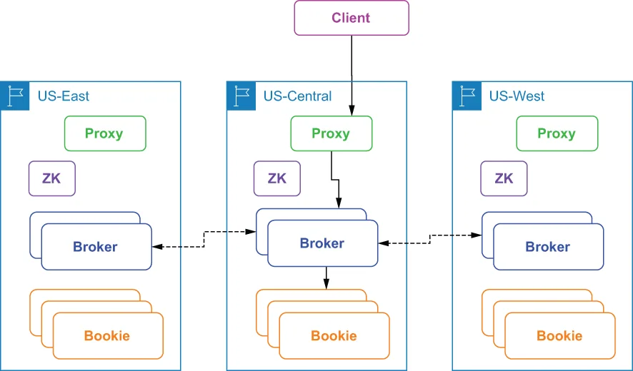

An asynchronous geo-replicated Pulsar installation consists of a two or more independent Pulsar clusters running in different regions. Each Pulsar cluster contains its own respective set of brokers, bookies, and ZooKeeper nodes that are completely isolated from one another. In asynchronous geo-replication, when messages are produced on a Pulsar topic, they are first persisted to the local cluster and are then replicated asynchronously to the remote clusters. This replication process occurs via inter-broker communication, as shown in figure B.2.
一个异步异地复制的 Pulsar 安装，由运行在不同区域的两个或更多个相互独立的 Pulsar 集群构成。每一个 Pulsar 集群都包含各自的一套 broker、bookie 和 ZooKeeper 节点，它们彼此之间是完全隔离的。在异步异地复制中，当消息被生产到某个 Pulsar 主题上时，它们会先被持久化到本地集群，然后再被异步地复制到各个远程集群。这个复制过程是通过 broker 之间的通信来完成的，如图 B.2 所示。

Figure B.2 Clients access an asynchronously geo-replicated cluster via the closest proxy, and the proxy routes the request to the broker that owns the topic, which then publishes the data to the bookies in the same region. The broker then replicates the incoming data to the brokers in the other regions.
图 B.2 客户端通过距离最近的那个 proxy 来访问一个异步异地复制的集群；该 proxy 把请求路由给拥有该主题的那个 broker，后者随即把数据发布给同一区域内的各个 bookie。随后，这个 broker 再把 incoming 的数据复制到其他各个区域中的 broker。
With asynchronous geo-replication, the message producer doesn’t wait for a confirmation from multiple Pulsar clusters. Instead, the producer receives a response immediately after the nearest cluster successfully persists the data. The data is then replicated to the other Pulsar clusters in an asynchronous fashion in the background. Under normal conditions, messages are replicated at the same time that they are dispatched to local consumers.
采用异步异地复制时，消息生产者不会等待来自多个 Pulsar 集群的确认。取而代之的是：一旦最近的那个集群成功把数据持久化，生产者就会立刻收到一个响应。随后，数据在后台以异步的方式被复制到其他各个 Pulsar 集群。在正常状况下，消息是在被分发给本地消费者的同时被复制出去的。
While asynchronous geo-replication provides lower latency because the client doesn’t have to wait for responses from the other data centers, it also provides weaker consistency guarantees due to asynchronous replication. Given that there is always a replication lag in asynchronous replication, there will always be some amount of data that hasn’t been replicated from source to destination at any given point in time. Therefore, if you choose to implement this pattern, your application must be able to tolerate some data loss in exchange for lower publish latency. Typically, the end-to-end replication latency is bounded by the network round-trip time (RTT) between the remote regions.
虽然异步异地复制因为客户端不必等待来自其他数据中心的响应而提供了更低的延迟，但由于复制是异步的，它所提供的的一致性保证也更弱。鉴于异步复制中始终存在着复制滞后，在任何给定时间点上，总会有一部分数据尚未从源端被复制到目的端。因此，如果你选择实现这种模式，你的应用必须能够容忍一定程度的数据丢失，以换取更低的发布延迟。通常，端到端的复制延迟以各个远端区域之间的网络往返时间（RTT）为上界。
It is worth noting that asynchronous geo-replication is enabled on a per-tenant basis in Pulsar rather than a cluster-wide basis, allowing you to configure replication only for those topics for which it is needed. This allows each individual department or group to maintain control over its data replication policies. Asynchronous geo-replication is managed at the namespace level, which provides more granular control over the datasets that get replicated. This is particularly useful for cases in which you are not permitted to allow data to leave a particular region due to regulatory and/or security reasons.
值得一提的是，在 Pulsar 中异步异地复制是按租户（per-tenant）启用的，而不是按整个集群启用的——这让你可以只为那些确实需要它的主题配置复制。这使得每一个单独的部门或小组都能保持对自己数据复制策略的掌控。异步异地复制是在命名空间级别上进行管理的，这为"哪些数据集会被复制"提供了更细粒度的控制。这对于那些因监管和/或安全原因而不被允许让数据离开某个特定区域的情形，尤其有用。